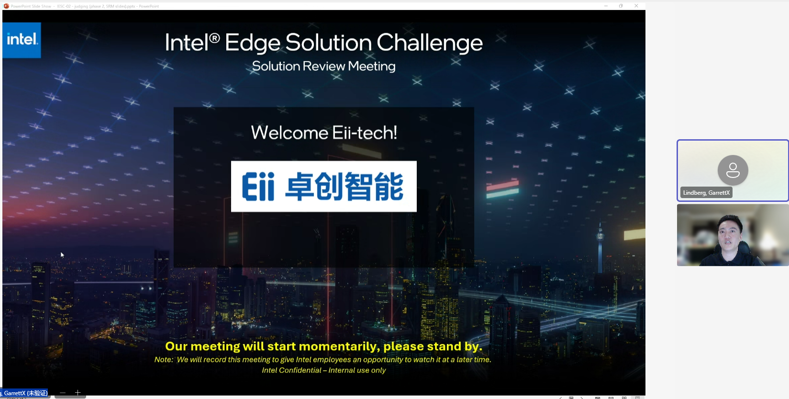
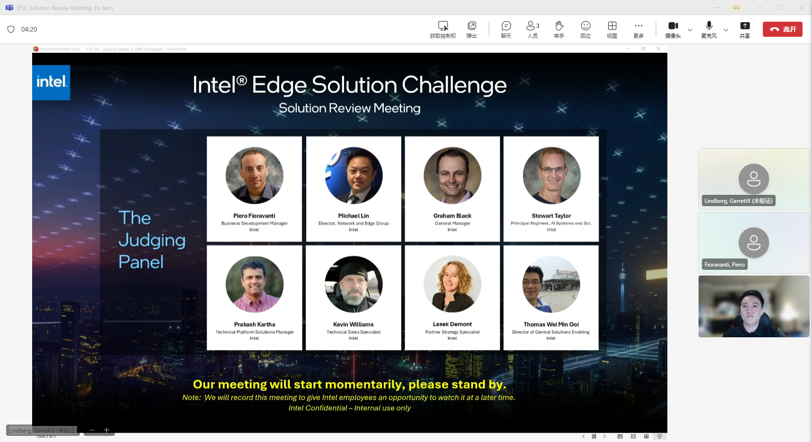
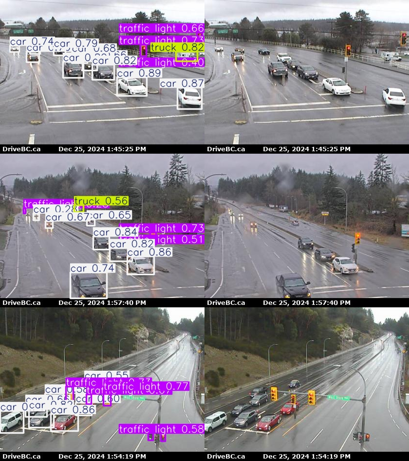

Intel Edge Solutions Challenge: Edge AI for Smart Cities & Transportationy
The Intel® Edge Solutions Challenge (IESC) is an ongoing series of time-bound campaigns designed to support and award Intel® ecosystem partners as they develop and deploy optimized solutions based on Intel® architecture and ingredients.
Technical innovation is at the center of how societies build and manage cities, and new technology is critical to advancing the way populations move, organize, and evolve.

IESC Meeting with Intel
Project: Traffic Light Controller System
Problem Statement
In urban areas, traffic congestion at intersections is a significant issue that leads to increased travel times, higher vehicle emissions, and reduced overall efficiency of the transportation network. Traditional traffic light control systems are often static and unable to adapt to varying traffic patterns throughout the day. This results in inefficient use of road capacity, with some traffic lights remaining green for too long when there is little traffic, or red for too long during peak hours, causing unnecessary delays and traffic buildup. Moreover, the lack of real-time data analysis and adaptive response mechanisms exacerbates traffic management challenges, particularly in densely populated cities where traffic patterns are complex and dynamic.

IESC Judges
Our Solution
To address the challenges posed by outdated traffic light control systems, we propose the development of an AI-Driven Traffic Light Controller System. This system will employ a combination of edge computing and artificial intelligence to dynamically manage traffic flow at intersections based on real-time data
- Real-time Traffic Data Collection: Install a network of high-resolution cameras at each intersection to capture and analyze traffic data, including vehicle count and queue lengths during red light phases.
- Intelligent Traffic Light Control Algorithm: Develop an AI model that processes the collected data to predict traffic patterns and dynamically adjust traffic light timings. The model will be designed to optimize traffic flow by minimizing wait times and maximizing the use of road capacity
- Edge Computing Infrastructure: Utilize edge computing to process data locally at the intersection, enabling immediate decision-making without relying on cloud connectivity. This ensures that traffic light adjustments are made in real-time and are not affected by network latency.
- Customizable and Adaptive AI Models: Train AI models to adapt to specific traffic conditions and intersection geometries. These models will be capable of learning from traffic patterns and continuously improving their predictions and control strategies.
- Data Privacy and Security: Implement robust data privacy measures to ensure that no personal data is collected or stored during the traffic monitoring process, and that all data transmission is secure.

Trained model for traffic detection
Expected Benefits of the Solution
- Reduced Congestion: By dynamically adjusting traffic light timings, the system will reduce traffic congestion, leading to shorter travel times and a more efficient use of road networks.
- Lower Emissions: Decreased idling times for vehicles will result in lower emissions, contributing to improved air quality and environmental sustainability.
- Enhanced Safety: Optimized traffic flow can reduce the likelihood of accidents, improving overall road safety.
- Scalable and Maintainable: The system will be designed for easy scalability to additional intersections and will include a maintenance plan for ongoing performance optimization and hardware/software upgrades.
The End of IESC meeting
Back to Projects